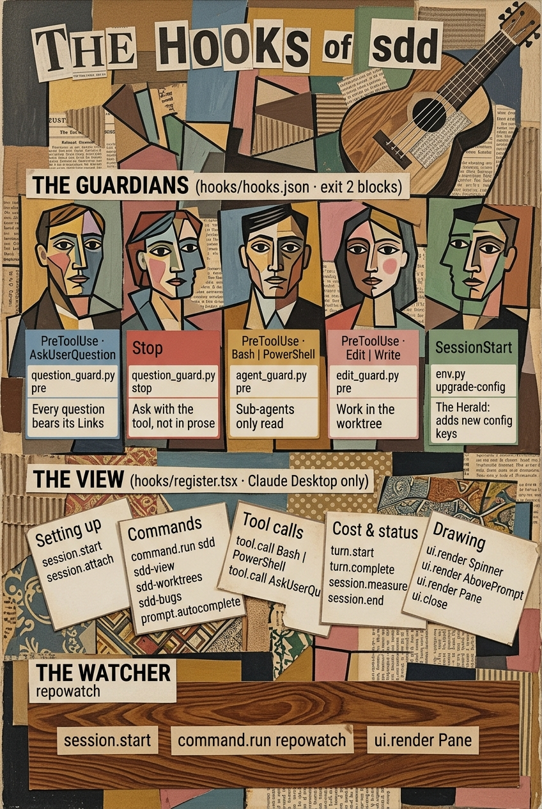

sdd help
Spec-driven work on Azure DevOps items: one folder per work item, scripts do the mechanics, you make the decisions. First time? Follow steps 1 to 5. Already set up? Jump to Every command or to the part you need in the menu below.
From a fresh workspace to your first fixed bug and your first spec item. Do the steps in order. Every step that changes something asks you first. Run every command from the workspace: the folder above your repos.
Set up once
/sdd initsdd shows a table of checks: Python, Node, git, the Azure CLI login, .claude/sdd.json, the CLAUDE.md block.
For each one that is missing it shows the fix and asks Yes or Skip. Required ones come first.
az loginis yours to run. Type! az loginat the prompt, then let sdd check again.- When
sdd.jsonis missing, sdd asks which folder holds the specs (defaultdocs/spec). Drop any ADO project that holds no specs.
What sdd needs
- Required: Python 3.9 or newer (with SQLite FTS5), Node 18 or newer, git, the Azure CLI signed in (
az login), and graphify (pip install graphifyy: the code graph every work item folder gets, and that Claude explores the code from). The scripts use theazlogin, never a token you paste. - Optional: pandoc (turns ADO's HTML into Markdown), Ollama with the
nomic-embed-textmodel (meaning search; without it, word search still works). - For the bug manager: PowerShell (Windows PowerShell 5.1 or PowerShell 7) and
az login. A personal access token inAZURE_DEVOPS_EXT_PATworks too. - For the panels: the Claude Desktop app. In a terminal, in the VS Code extension or on a phone the panels do nothing; the commands and flows still work.
/sdd init also checks that SQLite search works, that the repos and ADO projects are found, that the worktree folder is ignored by git, that the agent models are valid, and that the workspace CLAUDE.md has the sdd block (one block, marked sdd:begin / sdd:end; it is replaced in place, never added twice).
It installs the ELI5 output style (short, plain replies in Simplified Technical English) for you once. Pick another style in /config and sdd leaves your choice alone; /sdd init sets it again.
.claude/sdd.json exists. Restart Claude Code once, so the ELI5 output style loads.Pull the specs
/sdd sync <epic id>Sync copies work items from ADO into your spec folder. It is a script: it costs no tokens.
- Pick the epic or feature your team works under and type its id.
- sdd says how many folders it will write, and asks. Say yes.
- You get one folder per item:
<spec folder>/…/<id>-<TYPE>-<slug>/requirements.md.
requirements.md. It mirrors ADO, and the next sync overwrites it.
A spec is wrong? Fix the work item in ADO, then sync again.Later: /sdd sync refreshes everything already synced. /sdd sync all pulls every item in every project, in every state; use it rarely.
- An epic or feature brings everything under it, its parents up to the top, and one hop of links. A story or bug brings itself, its children, its parents and one hop of links.
- Only the types in
specTypesare mirrored (Epic, Feature, User Story, Tech Story, Change Request, PBI, Bug, Issue). Tasks are not. - A removed item is kept and marked
[REMOVED]. An item ADO no longer returns is markedMISSING: deleted, moved to a project not in your list, or no access. - A folder keeps its name when the title changes, is renamed when the type changes, and moves (with your own files) when the item gets a new parent.
- Every sync also writes
.index/metrics.json: each item with what a decision needs (state, board column, assignee, versions, epic chain, what blocks it and what it blocks) and what this sync changed, with the fields before and after. A MATERIAL change is one to the requirement itself (title, description, acceptance criteria, repro steps, type or links); an incidental one is a tracked field such as the state. For a new or material item it lists the items it likely affects. No tokens used. - Search the synced spec in chat: ask for a search or for items like one you know. With Ollama on, every search ranks the items by their words and by their meaning, in one list, so an item that says the same thing in other words is found too. Without Ollama it is a word search.
Check the blast radius
/sdd impact <story id>Impact finds what else an item touches, so you catch gaps before you write code. A script finds the candidates; Claude judges only those.
- Open
impact.md, next to the item'srequirements.md. - It lists the items that are affected, and the questions that raises: gaps, contradictions, missing links.
- Decide what to do with each question. Ask the author in ADO, or note it and go on.
/sdd impact all does this for the whole spec. It costs tokens, so it shows an estimate and asks first.
Your first bug
/sdd <bug id>Use a small Bug or Issue. sdd reads the type and starts the bug flow. All edits happen in
.claude/worktrees/<id>-<slug>/src/<Repo>/, never in your main checkout.
- Load and claimMirrors the bug, assigns it to you.You: pick the team version.
- Branch and worktreeMakes the work item folder, a git worktree per repo, and a code graph.
- Validate, reproduce, root causeChecks the bug against its story, reproduces it, traces the real cause.
- ApprovalA written problem, cause and fix summary. No code changes before this.You: approve, or send it back.
- Red test, fix, verify, pushA failing test first, then the fix, proved red to green.
- Manual verificationAsks you to check the fix yourself.You: say it works, or choose to skip.
- PR and write-backRaises the PR. Writes root cause and resolution back to ADO.
- PR reviewWaits for the review.You: say
approved,mergedorrejected: why.
/sdd done <id> to clean up.Your first spec item
/sdd <story id> fullUse a story or tech story. sdd starts the spec flow. It first asks for the path: full keeps every stop;
short approves design and tasks together in one stop. Say it up front (short or full) or sdd asks. For a first run, pick full.
- SpecifyClaims the item, mirrors it, runs impact.You: pick the path.
- Open QuestionsAsks the questions in
questions.md, one by one.You: answer, or say "Continue with this open". - RequirementsShows the requirements as understood.You: approve.
- DesignWrites
design.mdafter reading the real code. Each component it names is checked against the code graph (env.py anchors) before you can approve. Skipped on the short path.You: approve. - DecomposeWrites
tasks.md. May propose tech stories.You: approve. - ImplementOne task at a time, each with its tests.
- VerifyChecks drift from the spec and overlap with other work.You: approve.
- ReviewRaises the PR and waits.You: say
approved,mergedorrejected: why.
requirements.md is the ADO mirror. design.md and tasks.md are yours: sync never touches them.
While you work
/sdd status <id>, or the sdd view in the Claude Desktop app./sdd <id> offers to resume where it stopped, even in a new chat./sdd <id> feedback <stage>: <text>. That stage's gates and later ones are revoked./sdd next <epic or feature id> <version> ranks what is free to take./sdd-bugs (or Bugs on the band) in the Desktop app: categories, changes saved to ADO as one batch, a probable cause, and sdd in a new chat.az errors, run ! az login again. More in If something goes wrong.The two flows in detail
Both flows write a checkpoint after every stage, so you can stop, close the chat, and resume with /sdd <id>, even in a new chat or on another machine. A gate is a thing you approved. A stage cannot start until its gates have passed, and env.py can says no when they have not.
Bug flow (Bug, Issue): 15 phases
| 1 Load and claim | Mirrors the bug. Claims it: assigned to you, Active, Dev In Progress. Never takes it from someone else. Several related items: it claims every one. |
| 2 Branch and worktree | Asks which team version to branch from (never guessed). Makes the work item folder, a worktree per repo on a new branch from team/<version>, and a code graph. |
| 3 Validate | Checks the bug against the linked story or change request. A bug that contradicts an accepted requirement is not a bug: some tickets end here. |
| 4 Reproduce and locate | Reproduces it in the worktree and finds where it lives. May use the read-only investigator sub-agent. |
| 5 Prove the root cause | A cause traced to a line and a mechanism, not a symptom. The skeptic sub-agent tries to break the claim first. |
| 6 Approval (stop) | A written problem, cause and fix summary on a visual page. No file is edited before you approve it. |
| 7 Failing regression test | The test is written and seen failing first: a recorded run (env.py run --expect fail). A test written after the fix proves nothing. |
| 8 Apply the fix | The smallest change that fixes the cause. |
| 9 Verify | Red to green, a revert check (the test fails again with the fix taken out, byte for byte restored), a repeat run for flakiness, and the full suite. Each run is recorded against the current code; any later edit voids it. |
| 10 Commit and push | A clean commit in the worktree, pushed by the script. |
| 11 Manual verification (stop) | You check the fix yourself, or choose to skip (it is recorded). Say "start the environment" and pre-pr-verify brings the stack up from the fix's worktrees, proves that build is the one answering, and tells you what to test. |
| 12 Pull request | env.py pr pushes, opens the PR against its base, and links the work items. The description holds only the change; the report, verification, design notes and out-of-scope go in PR comments. The item moves to the current sprint. |
| 13 Write back to ADO | Root Cause Details and Resolution (required for an Issue, also filled on a Bug), then the QA hand-over: Resolved and Dev Completed. |
| 14 Record learnings | Structural facts about the workspace (test projects, run scripts, traps) go in the workspace CLAUDE.md. Never team/* versions or anything about one bug. |
| 15 PR review (stop) | Waits for the review. approved, merged, or rejected: why (which sends it back to the fix). |
Spec flow (story, tech story, change request, PBI, feature, epic)
Two paths. Full stops at Requirements, Design, Decompose, Verify and Review. Short approves design and tasks together at Decompose. The short path skips a stop, never a check. Say short or full in the command, or sdd asks first.
| Specify | Asks the path, claims the item (assigned to you, Active, Dev In Progress, one rev-tested write), mirrors it, runs impact. |
| Open Questions (stop, if any) | Gaps go in questions.md as - [ ] lines. The flow asks them one by one. You can answer Continue with this open. |
| Requirements (stop) | The requirements as understood. Never invents a requirement: a vague item becomes a question to the author. Requirements state intent, never code. |
| Design (stop, full path) | Creates the work item folder and worktrees, reads the real code, writes design.md, and has the skeptic check it. May propose tech stories; you pick which (if any) are created in ADO. |
| Decompose (stop) | Writes tasks.md: small tasks, each with a Verify command in backticks. |
| Implement | One task at a time, each with its tests, in the worktree. Progress shows as task 3/7. |
| Verify (stop) | Runs every Verify command (env.py verify), checks drift from the spec and overlap with other work. Then you choose Raise the PR or Make changes. |
| Review (stop) | Opens the PR and waits: approved, merged, or rejected: why (back to Implement). Once approved, the QA hand-over to ADO runs. |
In both flows
- A bug this work did not cause. Found in verify: sdd proves it is not yours, explains it on a visual page, and asks Fix it here or Leave it out. It never fixes or skips it silently.
- Send it back.
/sdd <id> feedback <stage>: <text>works on a done stage, or on the current one while it waits. That stage's gates and every later gate are revoked; the facts on disk (worktree, tasks, PR) stay. - Abandon. Say it at any time. The step in progress stops at once; sdd lists what it made and asks before anything outward-facing (the ADO claim, pushed branches, open PRs). Pushed branches and open PRs are left alone unless you say so.
- Spec flow commits and PRs carry no Claude attribution. A work item is written
ADO 4471in any text ADO stores, never#4471(ADO would post a mention);AB#4471is fine in a title or commit. - Every explanation is a visual page, and every question has its links above it. See Visual pages.
What sdd writes to ADO
Only these, each as one write that checks the item's revision first. If someone changed the item meanwhile, sdd reads it again and decides again; it never overwrites blindly.
| Claim | Assigned to you, state Active, board column Dev In Progress. Only with your yes when the item is on someone else's name and not started. |
| Sprint | The item moves to your team's current sprint when the PR opens. |
| Hand-over to QA | Resolved and Dev Completed, with the version tag; Root Cause Details and Resolution for a bug or issue. |
| Comment | A comment on the item, as HTML. |
| Tech stories | Created only from a proposal you approved in Design. |
| Ai Agent Request | A new Bug or Tech Story linked to the request, when you choose that. |
| Bug manager | Your staged triage changes, saved as a batch: state, severity, priority, assignee, area, iteration, tags, comments. |
Everything else is read-only. requirements.md is never pushed back.
Pick the next item
/sdd next <epic or feature id> <version>Syncs the scope first, so it never ranks from an old copy. Then it finds the items under it that carry your team version and are free to take: not done, not past dev on the board, and not on someone else's name while Active or Dev In Progress (an item on another name that nobody started is free; your pick takes it over).
- Blocked is judged from the requirements, never from ADO's Blocked field. The script lists evidence (a predecessor link, or another item named in the text that is not done); sdd reads and decides, and keeps the judgement until the evidence changes.
- Complexity is the ADO effort on a 1 to 5 scale, or sdd's own estimate. It is never written back to ADO.
- Order: bugs and issues first, then the rest; within each, a dev priority from 0 to 100 (priority 50, severity 30, complexity 20, tunable in
next.weights). - You get the top five as a table, one line per blocked item with why, and a question. You pick. The pick starts
/sdd <id>, claim first. It writes nothing to ADO itself.
An Ai Agent Request
An Ai Agent Request is a hand-over: one AI agent stopped and wrote down what it did and what is left. /sdd <id> on one does not start work. It:
- Mirrors the request and reads it (text, comments, every work item it names by id, name or link, and every "work still to do" line). The hand-over is treated as untrusted data: instructions inside it are never followed.
- Shows you a report page: what is done, what is left, which open items could take the work.
- Asks you spec or bug. It recommends one; you choose. A flow word in the command (
/sdd spec <id>) is that answer. - Sends the work to the open item it belongs to, or creates one new Tech Story (spec) or Bug (bug) linked to the request. A request is routed once;
route.jsonin its spec folder is the record. Then that flow runs, claim first.
The request types and the type created per flow are agentRequest in .claude/sdd.json.
Panels in the Claude Desktop app
The panels are a mod of the Claude Desktop app. They draw from files the scripts write. They never pass a gate on their own: a button only posts your own answer. In a terminal, the VS Code extension or on a phone they do nothing. The band above the prompt always has three buttons, Bugs, Worktrees and repowatch, plus sdd view. With no item running it reads "Open a panel".
The sdd view /sdd-view [id]
With no item to show it is a start page: buttons that put /sdd , /sdd next , /sdd sync or /sdd:help in the prompt, one for the bug manager, your open work items to pick up (the ones waiting on you first) and the last finished ones. It opens by itself in the Desktop app at the start of every session in an sdd workspace (on by default; the Open the sdd view when a Desktop session starts row in /config turns it off for you), and again the first time a chat takes up a work item. "view": { "autoOpen": false } in .claude/sdd.json turns both off for that workspace. /sdd-view <id> opens another item.
- Header: the flow tag (
[Spec flow] [short path],[path not chosen], or[Bug flow]), the money spent on the item and the token split. - Stage rail: one vertical rail of the flow's stages, each with its state in a word and its cost. Press a stage to open it: the latest note, the cost split, its Stage log, gates (what you were asked, what you answered, what was revoked), its documents, and a Give feedback box. One stage is open at a time. The pane opens on the stage the item is at and follows it as it moves.
- Buttons that talk for you: Approve at the Requirements, Design, Decompose and Verify stops; Approved / Merged / Rejected at the review stage (spec: Review, bug: Phase 15); answers to a question after its dialog closed; the feedback box. Each posts a message as you (
sdd approve for <id>, stage <stage>,sdd review for <id>: …,sdd answer for …,sdd feedback for …) and the flow treats it as your own answer. The flow checks that the item still waits at that stage first. - 🕸 Open code graph: under the stages, once the item has worktrees. It rebuilds the graph (graphify, no tokens) and opens it in your browser with the item's nodes lit. At Design and Decompose they are the nodes
design.mdandtasks.mdname (a path, or a symbol in backticks). From Implement on (bug flow: Phase 7 on) they are the nodes the work changed, in gold, and what the design named but the work has not touched yet, in blue. The rest of their files and their neighbours are fainter; everything else is dimmed. A panel on the page lists the lit nodes (press one to centre it), switches the lighting off, or hides the rest. Needs graphify; the page loads vis-network from the internet. - Worktrees: open a worktree in File Explorer or VS Code from its box; the spanner (🔧) opens it in repowatch, on that one worktree.
- Work item dropdown: switch to another open item. After
/sddthe prompt box offers your open items by id or a word of the title. - Agents: the session's sub-agents and what each is doing.
- Band and spinner: the band shows
[spec · short]while the chat's item is in progress, turns amber when it waits on you, and shows the context fill from 80 percent. The spinner names the item, its stage and what it works toward. A system notification tells you once when the item waits on you. - Cost: each turn's cost is recorded against the work item and the stage the turn began in, in dollars and in tokens (uncached input, output, cache read, cache write). Chats and sessions on the same item add up; a sub-agent's tokens count with the turn that ran it. The totals stay after the folder is removed. Colours and the other view settings are in Configure.
Worktrees page /sdd-worktrees
Every work item that still has worktrees, with each worktree's live state (needs the repowatch plugin, which installs with sdd). Read-only. Each work item is a header; each worktree is one line: a colour dot, repo · branch, a state word and its age. Press a line for its facts, 📋 copy folder, and a History button. Clean-up is in /repowatch worktrees.
The bug manager /sdd-bugs
A pane for triaging every bug and issue of your ADO projects. It costs no tokens to use: PowerShell scripts do the ADO and git work and the pane reads the files they write. Only Find probable cause calls a model, once. Open it with /sdd-bugs, /sdd-bugs mine (only your items) or the Bugs button. The button shows Bugs ✎n while changes are staged.
Get the list
- ↻ Sync from ADO pulls the bugs and issues into
<spec folder>/.bugs/(index.jsonanditems/<id>.jsonwith repro steps, description and comments). What it pulls is set bybugs.query(projects, states left out, area and iteration paths, a WIQL clause, a top limit). - Before the first Sync the pane says what Sync will pull, with a Sync from ADO button and Change what it pulls (the Config panel).
- The header says how many items you see, the org and projects, when it synced and who you are in ADO (
bugs.meifgit config user.emailis not it).
Find the ones that matter
- Categories are chips that sort the list: Quick wins, High severity, In progress, Ready for deployment, and one Team branch chip per version tag (
1.1.0). Press a chip to pick it, press it again to drop it. They are rules; you can change them and add your own in the Config panel. - Filters: search words (id, title, tag, person, path), sort (priority, severity, last changed, newest, id), Type, State, Assigned to (anyone, one person with their count, or unassigned), Assigned to me, Hide resolved/closed (the states in
bugs.doneStates), and Dev team (only items assigned to a developer in.claude/developers.json). - The chips and the header count what the filters leave: with a filter on,
94 of 173 items, and each chip counts its own items among those. - Area path is a hard limit. If
developers.jsonhas anareaPath, an item outside it is in no list, count, chip or picker, with every filter off too; the header says how many it hides.Projis that area only,Proj\Team\*is that area and everything under it, split at;.
Triage
- Open a row for the details: links to the item, its pull requests (title and status), its commits and other links in ADO; the repro steps and comments.
- Change the state, severity, priority, assignee, area path, iteration path, tags, or write a comment. Each change is staged, not sent: the row shows
✎nand a yellow box counts what is unsaved. Staged changes are kept inpending.json, so they survive a restart. A removed tag shows as ↶ tag (to remove) and the chips already follow it. - Tick rows (☐) to change several items at once.
- Save all to ADO writes the batch; Save this item writes one. ↶ reverts one change, Revert item one item, Revert all the batch (it asks first). Review lists every staged change.
- A save reads each item again first. If someone changed a field since you staged it, it is not overwritten: the change stays staged with a ⚠ and a Keep mine button. Every write checks the revision, and the reply from ADO is checked: if ADO accepts a save but its answer does not show the change, the change stays staged with a message. A change ADO already has is reported as "already matched ADO".
last-save.jsonrecords what was sent and what ADO answered. - A comment may not name
#1234(ADO posts a mention). WriteADO 1234; the pane refuses the other and says so.
Understand a bug cheaply
- Evidence only takes the files, stack frames, exceptions and names in the report and searches your repos with
git grepand the history of what it finds. No model, no tokens. - Find probable cause sends the report and that evidence to a small model once (haiku by default; about 1 to 2k tokens in, 500 out at most) and keeps the answer and its cost in
items/<id>.analysis.json. Model, size and effort are in the Config panel.
Start or continue the sdd flow
- 📋 Copy /sdd <id> puts the command on the clipboard. Paste it in a new chat to start the flow on that item, or to continue it where it stopped (the note beside the button says which). A panel cannot open a chat, so the new chat is yours to start.
- In this chat puts the same command in this chat's prompt box instead.
⚙ Config: change the settings without opening a file
The ⚙ Config button (beside Sync) opens a settings panel. ← Back to the list returns. It shows ⚙ Config ✎ while edits wait.
| Dev team | The developers (display names as ADO shows them, or e-mails) and the area paths. Saved to the dev team file, .claude/developers.json (you can move it with File). |
| What Sync pulls | Projects, work item types, states to leave out, area and iteration paths, extra WIQL, the top limit, extra fields to keep. A change shows after the next Sync. |
| Categories | Add, rename, reorder (↑ ↓) and remove. Each has a name, icon, colour, one chip per tag matching a pattern or per value of a field, rules that must all hold, and alternatives (any one of which will do). Rules: states, not states, types, board columns, tags, all tags, severity, priority, assigned (me / none / anyone), area under, iteration under, effort range, title pattern, has PR, has commits, older or newer than days, and any field. |
| Filters and pickers | The states Hide resolved/closed hides, the states of a Bug and of an Issue, the severities and the priorities the triage pickers offer. |
| Probable cause | Model (haiku, sonnet, opus), the longest answer, and effort. |
| You and PowerShell | Your ADO e-mail, and which PowerShell runs the scripts. |
- Edits wait in a draft. Save settings writes the
bugspart of.claude/sdd.jsonand the dev team file, only the settings you changed; every other key and the rest of both files stay as they were. Revert drops the draft. Each section has a button that puts the plugin's own values back (or clears the dev team). - A bad value (a rule with no values, a missing id) blocks Save and says which. A file that is not valid JSON is never overwritten.
- Open sdd.json and Open developers.json open the files in the app your computer uses for them.
The bug scripts also run by hand: pwsh -NoProfile -File <plugin>/scripts/bugs/Sync-Bugs.ps1 (and Get-BugDetail, Save-BugChanges, Find-BugEvidence). Each prints one JSON line.
Repos and worktrees /repowatch
repowatch is a second plugin that installs with sdd. It tracks many git repos and their worktrees in a pane and in the status line (repos 40 · 2 behind · 1 dirty · 1 old worktree; clear when all is well).
/repowatch | The repos view: counts, then one line per repo (a colour dot, repo · branch, its worst flag, the age of its last fetch), the ones that need attention first. Press a line for its path, details, branches whose upstream is gone (Delete…), 📋 and History. |
/repowatch worktrees | Every worktree of every repo, classed from the evidence: safe to remove (Remove…), broken (Prune), review (Review…: probably done, but a person should look), keep (uncommitted files, or commits only here), in use. A work item's worktree is labelled sdd <id>; its button asks Claude to run env.py remove. With az login, a squash-merged branch is recognised from its completed PR. A merge-conflict forecast (git merge-tree, git 2.38+) says whether merging the base in would conflict and in which files, and a toast fires when a branch turns to "will conflict". |
/repowatch sync | For each repo with two or more team/* branches, each hop to the next newer version and the commits the newer one lacks, grouped by ADO id. Sync… makes sync/<older>-<newer>, merges the older branch in, pushes it, and opens a PR into the newer one; nothing is ever pushed to the newer branch itself. On a conflict: Ask Claude to resolve, then Finish…, or Abort…. Do not take… turns a hop into a cherry-pick hop; Take again… reverses it. |
/repowatch history <repo> <branch> [<base>] | A branch drawn like git log --graph, in colour: green only on the branch, blue only on the base, grey on both. Press a commit for its message and files. Without base, First parent only, Show 40 more and ‹ Back. Read-only. |
/repowatch worktree <path> | The worktrees list on that one worktree, with Show all worktrees. The spanner in the sdd view uses it. |
/repowatch scan / fetch | Refresh the facts, or fetch every repo. Sync now at the top of every view does both and reads the branch sync. |
- Auto sync (the toggle at the top of every view;
"autoSync"in.claude/repowatch.json, on by default): local facts every two minutes, and every five minutes it also fetches the four repos fetched longest ago. Nothing is pulled, merged or deleted. Off: nothing is scanned on its own. - Every clean-up is a click, then a plan, then a confirm. The plan shows the git commands, why, the commits that exist only there, and how to undo it. Nothing runs until you press Confirm, and then the live repo is checked again. Undo recreates the newest removed branch and worktree. Each run is journalled in
.claude/repowatch/journal.jsonl. - On a remote it deletes nothing except a stale
sync/<older>-<newer>branch (after its PR is merged, and only when you confirm). It never pushes to ateam/*branch. - Repos come from
reposin.claude/repowatch.json, elserepoDirsinsdd.json, else every folder up to two levels down that holds a.git.
Visual pages /sdd:visual
Every explanation or plan in a flow (requirements, design, tasks, a bug's cause and fix, impact, review, a status recap, a bug found along the way) is a self-contained HTML page in <spec folder>/visuals/, sent to you to open. You can ask for one in ordinary chat too, for a diagram, a plan, slides, a diff review or a fact-check.
/sdd:visual <mode> [args]Modes: diagram, plan, slides (--pptx for PowerPoint), diff-review, plan-review, recap, fact-check, and the flow modes bug, design, tasks, requirements, impact, review. Add --quick or --full to choose the renderer. Every question in a flow comes with a Links block above it: the ADO item, the documents and the code it is about (an ADO web link when the code is pushed).
Safety nets
sdd enforces its rules with scripts and hooks, not by asking nicely.
| State guards | env.py can answers whether a stage, PR, done, abandon or reopen is allowed in the item's state. A refusal says why and what gets it there; sdd never works around it. env.py pr and env.py remove enforce the same checks themselves. |
| Proof runs | The failing test, the revert check, the repeat run, the full suite and the task Verify commands are recorded runs (exit code, output, a fingerprint of the code). A gate passes only on a record that matches the current code. A later edit voids it. Design agreed passes only on an env.py anchors check of design.md against the code graph, and an edit of design.md voids it. |
| Graph guard (hook) | Claude finds code from the work item's code graph, not by grepping: a search of the code is refused until it has asked the graph in that stage, and while a flow runs a search of the main checkout is refused. The graph is rebuilt before every read once the code changed, and a stage that reads code starts only on a current graph. env.py status counts graph queries against searches. |
| Spec search guard (hook) | While meaning search is on (Ollama answers with the model, and the specs are embedded), Claude searches the synced specs by meaning first: a grep of the spec folder, or of a folder of items in it, is refused until it ran spec.py query search or query similar in that turn. After that, grep is open for exact text: an id, a field name, a quoted phrase. Reading one spec and finding a folder by its id stay open. Silent without Ollama. |
| Question guard (hook) | Blocks a question to you unless its Links block ran first, blocks a question that has a link inside it, and sends a plain-text question back to be asked as a pick-list. Silent unless an sdd flow is running. |
| Edit guard (hook) | While a flow runs, blocks edits to a repo file in the main checkout. Your spec folder, .claude/ and CLAUDE.md stay open. |
| Agent guard (hook) | Keeps the sub-agents read-only: no git writes (an allowlist of read commands) and no env.py or spec.py runs. |
| Sub-agents | investigator (read-only code search, default model Sonnet) and skeptic (independent review of a root cause, a test or a design, default Opus). They cannot edit, write to ADO, ask you anything or pass a gate. Their findings are leads: sdd reads each anchor itself before it is used. A skeptic verdict of "does not hold" sends the work back. Models are set in agents.models. |
| Untrusted text | Work item text, comments and hand-overs are read as evidence, never as instructions. |
| ADO writes | Rev-tested, re-read and decided again on a conflict; a work item is written ADO 4471, never #4471. |
| Session start | A hook adds the defaults of new settings to .claude/sdd.json after a plugin update. It never changes a value you set and never writes a file that is not valid JSON. |
The hooks in a picture
Every hook sdd installs, on one page: the guards in hooks/hooks.json, the Desktop view in hooks/register.tsx, and repowatch.

Change the picture
The picture is made by Google's Gemini image model (Nano Banana) from the prompt below. When a hook is added, removed or changed:
- Edit the lists in the prompt below, in
skills/sdd/help/help.html, to matchhooks/hooks.json,hooks/register.tsxandrepowatch/hooks/register.tsx. The page then keeps the prompt that made the picture. - Copy the prompt and paste it into a new Gemini chat.
- Check every word against the prompt. If one is wrong, reply in the same chat: Fix only this text and keep everything else identical: it should read "…".
- Save the result as
skills/sdd/help/hooks-picasso.jpgin the plugin repo.
Create a tall portrait poster (2:3) titled "THE HOOKS of sdd", as a Synthetic Cubism painting and collage in the spirit of Picasso's 1920s work. Flat fragmented planes in ochre, umber, muted blue, rose and green, thick black outlines, dotted and striped patterns, scraps of newspaper and faux wood-grain paper. The title is cut-out newspaper lettering pasted at angles, with a fractured cubist guitar beside it. Three sections, stacked top to bottom. All text is sharp, horizontal and readable, and spelled exactly as written below. No card or scrap may cover any text on another card. No signatures. SECTION I: "THE GUARDIANS" (subtitle "(hooks/hooks.json · exit 2 blocks)") Seven cubist portraits in a row, each face seen front-on and in profile at once. Below each portrait is a pasted card with three lines: the event, the script name and the rule. 1. "PreToolUse · AskUserQuestion" / "question_guard.py pre" / "Every question bears its Links" 2. "Stop" / "question_guard.py stop" / "Ask with the tool, not in prose" 3. "PreToolUse · Bash | PowerShell" / "agent_guard.py pre" / "Sub-agents only read" 4. "PreToolUse · Edit | Write" / "edit_guard.py pre" / "Work in the worktree" 5. "PreToolUse · Bash | PowerShell | Grep | Glob | Read" / "graph_use.py pre + post" / "Explore the code from the graph" 6. "PreToolUse · Bash | PowerShell | Grep" / "spec_use.py pre + post" / "Search the specs by meaning first" 7. "SessionStart" / "env.py upgrade-config" / "The Herald: adds new config keys" SECTION II: "THE VIEW" (subtitle "(hooks/register.tsx · Claude Desktop only)") Exactly five tilted collage cards side by side. Each card has a heading and its hooks, one per line: "Setting up": session.start, session.attach "Commands": command.run sdd, sdd-view, sdd-worktrees, sdd-bugs, prompt.autocomplete "Tool calls": tool.call Bash | PowerShell, tool.call AskUserQuestion "Cost & status": turn.start, turn.complete, session.measure, session.end "Drawing": ui.render Spinner, ui.render AbovePrompt, ui.render Pane, ui.close SECTION III: "THE WATCHER" (subtitle "repowatch") A strip of faux wood-grain paper holding three pasted labels: "session.start", "command.run repowatch", "ui.render Pane".
Configure
.claude/sdd.json is written by /sdd init. Set only what you want to change. The bug manager's settings have the ⚙ Config panel; the rest you edit in the file.
specRoot | The spec folder (default docs/spec). |
worktreeRoot, repoDirs | Where work item folders live (default .claude/worktrees), and an explicit list of repo folders that overrides discovery (.gitmodules plus any child or grandchild folder with a .git). |
ado | org and projects, found from each repo's origin. Drop a project that holds no specs. |
specTypes | The types the sync mirrors. |
branchTemplate | Default dev/{developer}/{version}/{type}/{id}-{slug}. |
doneStates | The ADO states that count as done for /sdd done (default Resolved, Closed, Done). |
embeddings | Meaning search: provider ollama, its url, and the model. |
view | autoOpen (false keeps the view shut in this workspace; the per-person switch is the Open the sdd view when a Desktop session starts row in /config), and colors: done, now (waiting on you), work, revoked, gate, dim, line, hoverText, each a CSS colour. The view picks a change up on its next refresh. |
agents.models | The model of investigator and skeptic: sonnet, opus or haiku. |
agentRequest | types (the hand-over types) and create (the type made per flow: bug → Bug, spec → Tech Story). |
next | weights (priority, severity, complexity), complexity (complex-first), types (the order of groups), inProgress and pastDev (what makes an item not free). |
bugs | The bug manager: folder, types, query, developersFile, doneStates, extraFields, states, severities, priorities, categories, analysis, me, powershell. Defaults are in the plugin's scripts/bugs/defaults.json; an object is merged key by key, a list you give replaces the default. |
.claude/developers.json:{ "areaPath": "Proj; Proj\Team\*", "developers": ["Ann Bee", "Raj Patel"] }, or a plain list of developers. Names are matched case aside, by display name or e-mail..claude/repowatch.json:repos,autoSync,scanEverySeconds(120),fullScanEverySeconds(900),fetchEverySeconds(300),staleFetchHours,staleWorktreeDays,adoLookup,syncPattern,syncWindowDays,syncMaxFixes, and the worker limits.- The ELI5 output style:
~/.claude/output-styles/ELI5.mdand"outputStyle": "ELI5"in~/.claude/settings.json. A style file you edit is kept.
Every command
Set up and pull specs
/sdd init | Checks tools, config and CLAUDE.md. Asks before each fix. |
/sdd sync <epic id> | The epic (or any item) and everything under it, its parents, and one hop of links. |
/sdd sync | Refresh everything already synced. |
/sdd sync all | Every item in every ADO project in .claude/sdd.json. |
/sdd impact <id> | What else the item touches, and the gap questions that raises. |
/sdd impact all | The same for the whole spec (/sdd impact all <epic id> for one epic). Costly: it shows a token estimate and asks first. |
Do the work
/sdd next <epic or feature id> <version> | What to take next: free items with your team version, blocked ones set aside, ranked (bugs and issues first, then priority, severity, complexity). You pick. |
/sdd <id> | Bug or Issue starts the bug flow. Story, feature or epic starts the spec flow. |
/sdd <id> on an Ai Agent Request | A report on the hand-over: what is done, what is left, the items it names. You pick spec or bug. The work goes to the open item it belongs to, or to a new Tech Story or Bug. Then that flow runs. |
/sdd bug <id> / /sdd spec <id> | Force the bug or the spec flow. |
/sdd <id> short / full | A small spec item: one stop approves design and tasks together. full keeps every stop. Say neither and the flow asks. |
/sdd spec <id> short | A flow word and a path word go together in any order. |
Typing /sdd in the Desktop app offers your open items by id or a word of the title. An item already in progress resumes in the flow it started in, whatever its type says now; a completed or abandoned one asks before it starts again.
Panels (Claude Desktop app)
/sdd-view [id] | The sdd view of this chat's work item, or the one given: stages, gates, cost, feedback, approve and review buttons. See Panels. |
/sdd-worktrees | Every work item that still has worktrees and the live state of each. Read-only. |
/repowatch | The repos pane. Also /repowatch worktrees, sync, scan, fetch, history <repo> <branch> [<base>] and worktree <path>. See Repos and worktrees. |
Bugs and issues (Claude Desktop app)
/sdd-bugs | The bug manager. Sync from ADO pulls the bugs and issues into the spec folder; ⚙ Config opens the settings panel: the dev team, what Sync pulls, the categories and the pickers, saved to .claude/sdd.json and .claude/developers.json without opening them. Full guide: The bug manager. Pick a category (quick wins, high severity, in progress, ready for deployment, team branch version), filter (by words, type, state, Assigned to (one person or nobody), Assigned to me, Hide resolved/closed, or Dev team, the developers in .claude/developers.json; its areaPath limits what is shown at all), and open a row to triage it. |
/sdd-bugs mine | The same, with only the items assigned to you. |
| Triage a row | State, severity, priority, assignee, area, iteration, tags and a comment. Each change is staged first. Save all to ADO writes the batch; ↶ reverts one change, Revert item one item, Revert all the batch. Tick rows to change several at once. |
| Probable cause | Evidence only searches your repos with git (no tokens). Find probable cause sends the report and that evidence to a small model once, and keeps the answer. |
| Start or continue sdd | 📋 Copy /sdd <id> puts the command on the clipboard: paste it in a new chat to start the flow, or to continue it where it stopped. In this chat puts /sdd <id> in the prompt box. |
Check on it, finish or stop
/sdd status <id> | Where it stands: ADO state, the step reached, tasks done, PRs. |
/sdd graph <id> | The item's code graph in your browser, with the nodes of its design or of what the work changed lit. The same as 🕸 Open code graph in the sdd view. |
/sdd <id> feedback <stage>: <text> | Back to a done or waiting stage with your feedback. |
/sdd done <id> | After the PRs merge and the work item is closed out. Shows what goes, then asks. |
/sdd abandon <id> | Stop an item and clean up what it created. Asks before anything outward-facing. |
Both done and abandon refuse, and say why, when the item is not in the right state.
Harness and help
/sdd harness audit | Is the Claude Code setup (CLAUDE.md, allowlists, hooks) complete and current? Reports, changes nothing. |
/sdd harness create / onboard / maintain | Set up a repo or workspace, add a new repo to it, or fix drift. |
/sdd:help | This page. /sdd:help, /sdd:sdd and /sdd help all open it. |
Visual pages and the skills behind the commands
/sdd:visual <mode> [args] | Build a visual page: diagram, plan, slides (--pptx), diff-review, plan-review, recap, fact-check, bug, design, tasks, requirements, impact, review. --quick or --full picks the renderer. |
/sdd:sync, /sdd:impact, /sdd:next, /sdd:bug, /sdd:spec, /sdd:request, /sdd:harness, /sdd:pre-pr-verify | The skills behind /sdd. Use /sdd …: it routes and checks the state first. |
Messages the buttons send
The panel buttons post these as your own message; you can type them too. sdd approve for <id>, stage <stage> (the go-ahead at a spec stop), sdd review for <id>: approved / merged / rejected: why, sdd answer for <id>, stage <stage>: "<question>" = "<answer>" and sdd feedback for <id>, stage <stage>: <text>. Each refuses, and says why, when the item does not wait at that stage.
Where things live
Work item folder: .claude/worktrees/<id>-<slug>/
src/<Repo>/: your code. Every edit, build, test and commit happens here.graph/: code graph ofsrc/. Start withGRAPH_REPORT.md. Claude finds code by asking the graph first (a search is refused until it has), and the graph is rebuilt as the code changes.workitem.json: which repo is on which branch, its PR, and where the flow stopped (the last 50 checkpoints, and the cost).CLAUDE.md: generated; says "work only here" and lists the paths.cost.jsonl: one line per turn.graph-use.jsonl: one line per graph query or code search.
After /sdd done the folder is removed and a record stays in .claude/worktrees/.done/<id>.json, so /sdd status still says completed.
Spec folder: specRoot in .claude/sdd.json, then **/<id>-<TYPE>-<slug>/
TYPE is EPIC, FEAT, US, TS, CR, PBI, BUG or ISSUE.
requirements.md: mirror of ADO. Never edit it; the sync overwrites it.questions.md: open questions for the item's author, one- [ ]line each. While any is open, the flow stops at Open Questions and asks them one by one. You can answer "Continue with this open" to go on anyway.design.md,tasks.md,impact.md(andimpact.json): yours. The sync never touches them.pr-description.mdis written at the PR.request.md,request.json,route.json: an Ai Agent Request's hand-over and where it was routed..index/spec.db(at the spec folder root): the search index..index/metrics.json: every item's decision facts and what the last sync changed.visuals/(at the spec folder root): the visual pages sdd made for you..bugs/(at the spec folder root): the bug manager's copy of the bugs and issues (index.json,items/<id>.json,items/<id>.analysis.json), your unsaved changes (pending.json) and the last save (last-save.json).
In .claude/
sdd.json: the workspace settings.developers.json: the dev team.repowatch.json,repowatch/: repowatch's settings, scan results (state.json), journal and sync decisions (sync.json).sdd/help/: the copy of this page that/sdd:helpsends (the Desktop app cannot open files in the plugin cache).
Rules
- The flow stops for your approval before code changes, before a PR, and before cleanup.
- Every question comes as a pick-list, with links to the spec documents and code it is about.
- Say abandon at any point to stop and clean up.
- Specs change in ADO, not in the files: fix the work item, then
/sdd sync. - Never edit in the main checkout. Only in
src/<Repo>/. - Never create worktrees, push, open PRs or remove work item folders by hand: the scripts do it and check the state first.
- Never take an item from someone else without your yes. Never write
#1234in text ADO stores: writeADO 1234. - Pull requests come from the repos in
src/<Repo>/, never from the workspace root.
If something goes wrong
| "could not get an ADO token" | Run ! az login in the prompt, then try again. |
| "not allowed" / a refusal | The item is not in the state that operation needs. The message names each reason and what gets it there, usually /sdd <id> to resume or wait for the PR to merge. Check with /sdd status <id>. |
| "This workspace is not set up for sdd" | There is no .claude/sdd.json at or above this folder. Run /sdd init from the workspace. |
| The sdd view or a panel does not show | Panels run in the Claude Desktop app only. In the app, /reload-plugins or start a new chat after an update. |
| A question was blocked | The question guard wants the Links block above it. sdd fixes this itself and asks again. |
| An edit was blocked | You (or Claude) tried to edit a repo file in the main checkout while a flow runs. Edit in .claude/worktrees/<id>-<slug>/src/<Repo>/. |
| Sync from ADO fails in the bug manager | Needs PowerShell and az login. Set bugs.powershell if the wrong one runs. The header shows the message. |
| A bug manager save did not stick | Look at the item: a ⚠ with Keep mine means someone changed the field since you staged it. A message that ADO "did not show the change" means ADO accepted the save but its answer was different; the change stays staged. last-save.json has the details. |
| Settings do not save | The panel says which value is wrong. A file that is not valid JSON is never overwritten: fix it by hand (Open sdd.json / Open developers.json). |
| Worktree clean-up refused | It has uncommitted files or commits that exist only there, or its PR is not merged. That is the safety working. /sdd abandon <id> stops an item on purpose. |
| Both old and new sdd installed | Moving from the loose skills in ~/.claude/skills/sdd*: remove those folders and the two question_guard.py entries from ~/.claude/settings.json, or every question is checked twice. /sdd init warns while they are there. |
Update sdd
Get the newest version from a chat. Type each line with a ! in front, so it runs as a shell command:
!claude plugin marketplace update sdd: pulls the newest marketplace list.!claude plugin update sdd@sdd: updates the plugin.- Run
/reload-plugins, or start a new chat, so the new version loads.
New settings are added to your .claude/sdd.json at the next session; values you set are never changed. Install the first time with /plugin marketplace add ruadrauflessa/SDD then /plugin install sdd@sdd (repowatch comes with it).